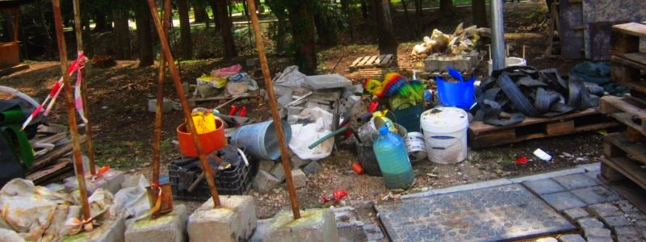

Производителност и ценност: направи го най- после и спечели!
Представете си, че има нещо, с което ако се заемете и доведете докрай, ще живеете на по- високо ниво.
Навярно се досещате какво е: тегло, бизнес идея, връзки.
Но едно е да знаеш, друго е да действаш.
Ако приложите и половината от триковете, които ви споделям по- долу ще напреднете неимоверно.
Може да сме много продуктивни, но създаденото да не е от голяма полза.
Това е разликата между ефективност и ефикасност.
Ефикасно е да напишеш хиляда доклада, ефективно е да предоставиш нужната информация в сбит формат в подходящия момент.
Ефикасно е да произведеш хиляда чаши, ефективно е да произведеш чаши, които ще се купуват, а не боклуци, които да залежават по складове.
Първи урок: няма смислъл да си губим времето за неща, които сме опитвали и преди без успех, ако това не е ценно нито за нас, нито за околните. Признайте пред себе си.
Втори урок: постигането на нещо ценно изисква усилия и постоянство, но си заслужава.
Зарежете глупостите и нека ви е грижа само за малко, но важни неща, на които да отдадете своите 104%.
ЕФЕКТИВНОСТ Е ДА ЕЛИМИНИРАШ ВСИЧКО ОСВЕН ЦЕННОТО
Ефективността зависи от целите.
Бездействието е най- голямата пречка пред постигане на мечтите ни.
Когато нямаме конкретен проект, най- привлекателно в ума ни е да се разтакваме. Затова когато сте на вълната, започнете новото преди или точно когато завършвате старото. Като пример тук може да дадем чилийската писателка Изабел Алиенде, която започва новата си книга всяка година на една и съща дата независимо дали предишната е готова.
Но какво става, ако нямате планиран проект- тогава погледнете на мястото, където пазите ненадейните си хрумки. Но за да направите това, първо трябва да сте ги записали. Така и главата ви се освобождава от ненужното на момента. Затова пазете файл с откъси, изрезки, мисли, които да ви вдъхновяват.
Разликата между аматьора и професионалиста е, че те не оставят добрите идеи да им се изплъзнат. Което ни дава надежда, защото не брилянтността ни дели от мечтите ни, а дисциплината.
За да не оставят свършването на необходимото на случайността, успешните хора използват комбинация от два мисловни способа: конкретика и напомняне. Какво имам предвид?
Те не изпускат най- важното от очи- буквално. Или най- малкото го записват. Има няколко метода да го постигнете и вие. Направете си табло с мечтани постижения, което да закачите на стената си. Може да съдържа вдъхновяващи личности; модели на дрехи или предмети, ако сте дизайнер; дестинация, на която искате да отидете тази година; цитат, какъвто има на бюрото си рапъра Кендрик Ламар.
Направете си списък със примерно 100 житейски цели и се залавяйте да ги отмятате- може да е разделен на финанси, преживявания и лични цели.
След това запишете три цели за месеца, както прави един от най- оригиналните копирайтъри Нев Медора. Сложете ги на видно място- на огледалото или на стената до компютъра и ще видите как този малък жест насочва мислите ви. А три е постижимо число. Във всеки случай използвайте тези или намерете друг начин, по който постоянно да си напомняте какво трябва да се свърши и каква ще е отплатата- чаша надписана със силни и вдъхновяващи думи или тапет или папка на десктопа, които се появяват първоначално като си включите компютъра.
Ако ви е трудно да си представите какво трябва да свършите, започнете от края: представете си, че сте завършили проекта- какво точно представлява, как се чувствате.
Как ще знаете, че сте успели? Казват, че изкуството не е завършено, а изоставено. Вложете частица от оригиналността си, защото ако ни е грижа за това, което правим, ще вложим повече от работа. Но знайте също че винаги може да бъде по- качествено, по- впечатляващо и по- полезно! В повечето случаи не може да си позволим да се стремим към съвършенство. Но пък може да си поставим задоволителна цел и екстравагантна цел. Все чудесни резултати, но не и ако се залъгваме и постоянно отлагаме. Задоволителната е със сигурност постижима и ни дава спокойствие, а когато се стремим към екстравагантната цел се случва магията.
Затова не е зле постоянно да се опитваме да надскочим себе си (но не във всички части от живота си, че става мазало). А ако ни е натоварено, дори малко е по- добро от нищо. С 1% всеки ден, с натрупването в края на годината имаме доста подобрение.
Самотно е, когато се захващаме с нещо. Има ли смисъл? Колкото и въображение да имате, няма как да си отговорите на този въпрос. Затова намерете хора, които ще имат полза, преди да свършите работата. Направете снимка или скрийншот, опишете с какво точно сте се заели и публикувайте. Може онлайн, може в профила ви във Facebook или друга социална медия. Може дори да седнете с приятел, да ви каже какво си представя и дали би му било полезно примерно.
В тази връзка, колкото и прекрасно да е писанието или изделието ви, ако няма видимост няма полза. Затова не се страхувайте да споделяте идеите си- почти никой не би вложил същото количество труд като вас, а малко са тези, които копират (въпреки че това зависи от продукта ви).
И винаги имайте предвид правилото 80/20 още наричано Парето, което гласи, че 80% от успеха идва от 20% от източниците. Например, 20% от клиентите ви образуват 80% от доходите ви. Или през 20% от времето, свършвате 80% от работата. Затова се фокусирайте върху тези 20% и зарежете останалото.
Водата е едно от най- ценните неща на света, но понеже се среща навсякъде цената й не е голяма.
Във всеки случай не и преди фирмите за бутилиране да ни изплашат, че водата, която тече от чешмите не е достатъчно чиста.
Но ние не искаме богатството ни да се крепи на страх, а напротив. Искаме да увеличаваме потенциала за благоденствие на света.
Затова супер полезно е да знаем какво е ценно.
Вече видяхме, че ценни са редките или уникални неща.
Що се отнася до материалното, обикновено нуждата ни от тези редки предмети, да речем диаманти, е илюзия и/ или следствие на умела и подмолна рекламна кампания; не точно на злодеите от шпионските филми, а просто на алчни и несигурни човеци. Тук не става въпрос за животоспасяваща операция или подслон за самотна майка, защото сума ти къщи стоят празни или със самотен обитател, а средставата за здравеопазване са срамно малки в сравнение със значението му за разлика от други области.
Що се отнася до духовното, търсим медията или хората, които са способни да променят отношението или представата ни за нещо важно, които са убедителни, които ни откриват приятни чувства, мисли и места. В тази връзка никой не създава от нищото, както е казала Мери Шели, а и Нютън, който стои на "раменете на гиганти". Създава се от хаос. Изграждащи блокове на вселената си танцуват насам- натам, думите си се подреждат в речника, докато някой не вникне в същността им и не разкрие важността им. Но да се приземим по- близко до ежедневието ни.
Сега сме изправени пред съвсем ново предизвикателство. Докато исторически умелите занаятчии прекарвали години в придобиване на умения и знания оттук- оттам, днес информацията ни залива от всеки екран, листовка или билборд. Но да се ориентираме и да намерим стъпките, които да следваме, става все по- смазваща задача.
Така и в изкуството, да намерим късчето скъпоценен камък сред цялата плява става все по- непосилно.
Друго ценно, освен насока, е да покажете как дадена полза се отнася точно за специфичен тип. Например как да си засадите билки на балкона, печатане на материали в малки тиражи за малък и среден бизнес или йога за майки. Не подценявайте дори как моралната подкрепа, и чувството, че не си сам в дадено начинание (сваляне на тегло, учене на език, регистриране на фирма) може да се отрази на успеха.
ЕФИКАСНОСТТА СЕ ОПРЕДЕЛЯ ОТ ПРОИЗВОДИТЕЛНОСТТА ВИ
Ефикасността зависи от ангажираността.
Ако разчитаме на волята си да свършим каквото и да било, трябва да сме титан.
Оправдавали ли сте се, че ви липсва мотивация. Разбираемо е да ви липсва за задачите, които не ви допадат, но защо тогава не напредвате по любимите си задачи. Просто колкото и мотивация да имаме в началото, всичко, което си заслужава, изисква постоянни усилия.
За да се заставите да се съсредоточите върху настоящото поръчение, нагласете средата си да способства за производителност: да е тихо, чисто и да не се налага да бързате за среща или съвещание.
Използвайте също така наречения ефект на Зейгарник, според който за да се сетим да продължим работата си на следващия ден трябва да я оставим недовършена. Например ако пишем някакъв доклад трябва да спрем по средата на изречението. Ако отговаряме на имейл, трябва да го оставим като чернова.
Освен този страхотен трик за да започнем (което казват е най- трудната част), може да се възползваме от въздействието на ритуалите. Това са действия, които ни подготвят психически за това, което предстои. Например вечер като си измием зъбите се настройваме за спане. Или щом сутрин си приготвим кафето и седнем пред екрана се подготвяме за сутрешната заетост. За магазинер такъв ритуал може да е поставянето на табелата "Отворено", а за доктор или механик- изваждането на кутията с инсрументите. Колкото по- автоматични станат тези жестове, толкова по- лесно ще ни е да ни потръгне работата. А това идва с повторението.
Веднъж започнали трябва да решим как ще измерваме дали сме постигнали целта си. Може да стане по броя часове, през които се бъхтим, или по броя на написани думи/ обслужени клиенти/ уговорени продажби и така нататък в зависимост от дейността.
През това време не трябва да позволяваме на нищо да ни разсейва: шум, прекъсвания и интернет разбира се, но също така другите сто проблема, с които сме се заели. И тук идва въпроса, че за да успееш в нещо трябва да игнорираш друго за момента. Чували ли сте историята с пилота на легендарния инвеститор Уорън Бъфет? Тя гласи следното: има три стъпки, които да следваме, за да определим приоритетите си. Първо Бъфет моли пилота си да нахвърля 25 кариерни цели, които иска да постигне. След това го моли да огради 5 най- желани цели. Така Майк Флин (така се казва пилота) се оказва с два списъка: един с пет цели и друг с двадесет. Очевидно той трябва да започне с петте веднага. Тогава Бъфет пита: "А какво става с тези, които не загради?". Флинт казва, че може да работи по тях отвреме- навреме, защото не са спешни. Тук идва и изненадата. Инвеститорът казва, че не е така. Вторият списък става "Избягвай на всяка цена" и не получава никакво внимание, докато топ 5 не са постигнати. Така разбираш, какви решения и действия да предприемеш.
Така че не се поддавайте на перфекционизма и желанието да свършите още нещичко, защото в повечето случаи може да се върнете и да подобрите нещо, но ако проекта ви не види бял свят- няма да получите обратна връзка как да стане по- добър. По- добре да завършите точка от списъка си и да преминете на следващата, отколкото да имате десетки задачи, които просто се влачат през месеците и ви притискат.
Не случайно приоритет се ползва оригинално в единствено число, докато не дойде нашата модерна ера.
Когато вече сте избрали върху какво да се фокусирате, един от най- резултатните методи е този на комика Зайнфелд. Може да го наречем "не прекъсвай веригата". Трябва ви обикновен календар, на който всеки ден, когато свършите каквото трябва отбелязвате с кръстче. Така постепенно се образува верига и като я гледате сте доволни от постигнатото. Остава само да не пропускате ден, за да не прекъснете веригата. Просто, но резултатно.
По- голяма част от нещата, които вършим не са еднократни.
Но тъй като сме си свикнали, повтаряме все едни и същи действия без да се замислим. За да си спестите излишен труд, отделете време за изграждане на системи. Знам, че ще ви се струва, че то е загубено, но ще усетите ползата, както и вашите клиенти или колеги.
Така няма да разчитате на случайността, за да се сетите да свършите работата ви, което ще се изрази в предвидим и навременен резултат.
Ако не сте се сблъсквали с понятието тъкмо се питате: "Добре, ама какви са тези системи?".
Чисто и просто човешката памет е несъвършена, затова не трябва да оставяме никоя стъпка от процеса на произвола. Системите ни позволяват да направим качеството предвидимо и повтаряемо. За целта трябва да запишем всички, дори и най- незначителните, дейности, които извършваме редовно; след това трябва да ги разделим и организираме в някакъв смислен поръдък; и накрая да решим дали са толкова основни, че да заслужават цялото ни внимание и креативност или може да ги предадем на друг или да ги автоматизираме.
Но дори и най- уникалното съдържание става по- лесно за измисляне, ако използвате темплейти (за имейл, презентации, договори). Така не се губи личното отношение, но имате някаква рамка, която да ги ограничава и води.
Белият лист може да е плашещ, както и монолитния проект. Току що видяхме как да се спрам с първото, а за второто трябва да го разбиете на конкретни задачки, за да не изглежда толкова страшно.
Ако се оплаквате, че няма кога да седнете и да свършите нещо, не сте се замисляли, че не времето е кът, а енергията (физическа или емоционална). Все пак имате време за риалити шоута. Затова открийте или признайте пред себе си кога е пиковото ви време. Вярно, че обществото ни се върти около ранното ставане, но часът си е час по всяко време.
Дори да сте напълно ококорени вече, започването е най- тежката част и тук на помощ идват ритуалите, които ви напомнят да свършите каквото трябва. Това са действия, които нямат пряка връзка с предстоящото, но ви настройват на правилната честота. Например, сутрин да си направите чаша кафе преди да седнете на бюрото или да си облечете анцунга преди тренировка. Знаете, че след извършването на едното действие, неизбежно и логично следва другото.
Окей, в разгара на работата сте, но ви е трудно да поддържате темпото. В продължение на хиляди години на човешкия мозък не му се е налагало да остава концентриран в продължение на часове колкото трае работния ден. Затова се нуждае от периодична почивка. Тук идва техниката Помодоро. В какво се състои? Просто ви трябва кухненски таймер или плъгин за браузъра, който да настроите за 25 минути. След изтичането им ви се полага 5- минутна почивка. След четири такива сесии, почивката е от 15 минути. Простотата на техниката я прави толкова ефективна.
Така знаете, че през тези 25 минути нямате друга работа освен тази пред носа ви. Помага и ако сложете това, по което работите на цял екран.
Ако сте изгубили удовлетворение от работата, най- вероятно сте загубили представа защо я вършите. За да не гледате на работата си като на досада, обикновено трябва да си спомните каква помощ е за хората, за които я вършите, или пред какво предизвикателство сте били изправени, но сте се справили.
Във всеки случай, не лишавайте хората, на които може да им е полезна работата ви. Не отлагайте да споделите. Винаги може да бъде по- добре, но не и ако не съществува.
И една бележка за креативността и продуктивността: най- творческите хора са тези, които се излагат на много идеи, а на ученето и общуването с чуждите произведения може да се гледа като на изгубено време. Но това се отплаща, когато те решат трънлив проблем или увеличат възможностите ви в пъти.
Така че, не се косете, ако отвреме- навреме не залягате над задачите като робот. Създаването и приемането на външни стимули вървят ръка за ръка.
Затова ви оставям с тази мисъл: когато не правите нищо, правете го нарочно и без вина; когато правите нещо, изберете внимателно какво и вложете всичката си страст и усърдие.